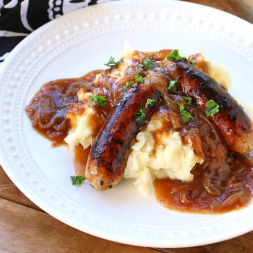

Bangers n Mash Recipe

Description
Bangers and mash, also known as sausages and mash, is a traditional British dish, consisting of sausages served with mashed potatoes.
It may consist of one of a variety of flavoured sausages made of pork, lamb, or beef. The dish is usually served with onion gravy,
but may also include fried onions and peas.
Ingredients:
- 8 sausages of choice
- 1 large onion
- 2 garlic cloves
- 3 tbsp flour
- 2 cups beef stock/broth
- mashed potato
Steps:
-
Cook sausages: Heat oil in a large skillet / fry pan over medium high heat.
Add sausages and cook, turning, until browned as much as possible all over and cooked through.
Cook time will differ depending on sausage size.
-
Remove sausages onto a plate. Turn heat down to medium.
-
2 tbsp oil remaining: You need around 2 tbsp oil left in the skillet. If you have much less, add a bit of butter or oil.
-
Saute onion and garlic: Add onion and garlic, cook until golden brown – around 4 minutes.
-
Cook off flour 2 minutes: Add flour and mix through. Then cook, stirring constantly for 2 minutes.
-
Gradually add beef stock: Add about 3/4 cup of beef broth and mix into the onion so it becomes a sludge.
Then add remaining beef broth and mix until combined. If it's lumpy, use a whisk to help make it smooth.
-
Thicken gravy: Simmer, stirring, for 2 to 3 minutes until the gravy thickens but is slightly thinner than you want, it will thicken more as you serve it.
-
Season: Add salt and pepper. Stir, taste, then add more salt if you want.
-
Serve sausages with plenty of gravy, with mashed potato and peas on the side.
Back to home